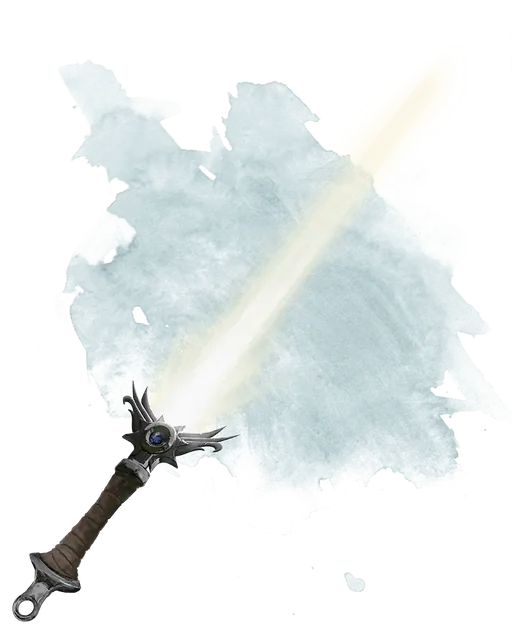

Солнечный меч
Sunsword
Оружие (длинный меч), легендарное (требуется настройка)

Рекомендованная стоимость от 50 001 зм
Солнечный меч – это уникальный клинок, когда-то принадлежавший брату Страда, Сергею фон Заровичу. В своей изначальной форме он имел платиновую рукоять и гарду, а тонкий кристальный клинок был столь же крепок, как и сталь.
Страд нанял могущественного волшебника по имени Хазан, чтобы тот уничтожил оружие после смерти Сергея. Первая часть процесса требовала, чтобы клинок покинул рукоять, и в этом Хазан преуспел. Пока Хазан был занят уничтожением клинка, его ученик украл рукоять и сбежал. Хазан позже обнаружил покалеченный труп своего ученика в Сваличском Лесу, но рукоять так и не была найдена. Чтобы избежать гнева вампира, Хазан сказал Страду, что оружие было уничтожено полностью.
Рукоять, обладавшая собственным сознанием, знает, что ей никогда не воссоединиться с изначальным клинком. Впрочем, она обладает, всеми свойствами солнечного клинка [sun blade].
Сознание. Солнечный меч – это разумное хаотично-доброе оружие с Интеллектом 11, Мудростью 17 и Харизмой 16. Он обладает обычным слухом и зрением в радиусе 60 футов. Оружие общается по средству передачи эмоций существу, носящему его.
Личность. Главная цель солнечного меча – это уничтожение Страда, не столько из-за того, что он хочет освободить земли Баровии от зла, но потому, что он жаждет мести за потерю кристального клинка. Оружие втайне страшится собственного уничтожения.